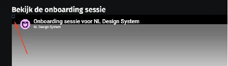

Geen bevindingen.
Samenvatting
Wij hebben de website van NL Design System onderzocht tussen 21 september en 7 oktober 2026. De website voldoet volledig aan WCAG 2.2 op niveau A en AA. De bevindingen in dit rapport gaan alleen over de ingesloten videospeler van YouTube. Per bevinding lees je hoe die kan worden aangepakt.
In opdracht van
-
Voldoet
-
Afgekeurd
55
Totaal
- voldoet
Impact
Klein: 0
Matig: 0
Serieus: 0
Kritiek: 0
Type
Content: 0
Techniek: 0
Waarneembaar
- van 20
Bedienbaar
- van 20
Begrijpelijk
- van 13
Robuust
- van 2
Deze SC zijn afgekeurd:
Over dit onderzoek
- Onderzocht door
- Proper Access
- In opdracht van
- NL Design System
- Datum rapport
- 15 oktober 2026
- Standaard
- WCAG 2.2
- Methodologie
- WCAG-EM
Scope van het onderzoek
- De pagina's onder Steekproef, in de testomgeving documentatie-next-git-release-website-next-nl-design-system.vercel.app
Basisniveau toegankelijkheidsondersteuning
- Google Chrome, versie 155
- Mozilla Firefox, versie 156
- Apple Safari, versie 26.6
- VoiceOver schermlezer op macOS Tahoe 26.6.2
- De website is gebouwd voor de browsers uit de baseline van NL Design System: nldesignsystem.nl/baseline/2026-09
Technologieën van de website
- HTML
- CSS
- JavaScript
- DOM
- SVG
- WAI-ARIA
Gevonden problemen
Filter bevindingen op:
Impact:
Type:
Status:
Geen bevindingen gevonden voor dit filter.
Link naar pagina: https://documentatie-next-git-release-website-next-nl-design-system.vercel.app/
De bevindingen op deze pagina gaan over de ingesloten videospeler van YouTube. De speler wordt geladen vanaf youtube-nocookie.com, dus de code komt van YouTube en niet van deze website. De bevindingen over de videospeler zijn gevonden tijdens de audit in september 2026. In oktober 2026 zijn ze niet opnieuw gecontroleerd.
#1 - Onzichtbare elementen krijgen toetsenbordfocus

Als de video start en de bezoeker met het toetsenbord navigeert, komt de focus eerst op een onzichtbare knop in de speler. Nog 2 onzichtbare knoppen krijgen ook focus, direct voor en direct na de knop afspelen/pauzeren.
Na de link met het zichtbare label "YouTube" staan ook meerdere onzichtbare links die toetsenbordfocus krijgen.
GitHub-issue: https://github.com/nl-design-system/documentatie/issues/4876
Oplossing:
Zorg dat alleen zichtbare elementen toetsenbordfocus krijgen.
#2 - De logoknop heeft een onjuiste toegankelijke naam
De logoknop opent de YouTube-pagina van de organisatie, maar de toegankelijke naam is "thumbnail-image". Die naam beschrijft de afbeelding en niet wat de knop doet. Screenreadergebruikers weten daardoor niet dat de knop de YouTube-pagina van de organisatie opent.
GitHub-issue: https://github.com/nl-design-system/documentatie/issues/4877
Oplossing:
Geef de knop een toegankelijke naam die beschrijft wat hij doet of waar hij heen gaat.
#3 - In de code staat niet dat de knop een pop-up opent
De knop voor instellingen, met de toegankelijke naam "Instellingen voor afspelen", opent een dialoogvenster. Dat staat niet in de code.
GitHub-issue: https://github.com/nl-design-system/documentatie/issues/4878
Oplossing:
Gebruik de attributen aria-haspopup="dialog" en aria-expanded. Daarmee geef je door dat de knop een dialoogvenster opent en of dat venster open is.
#4 - Het dialoogvenster heeft een algemene toegankelijke naam
De knop met de toegankelijke naam "Instellingen voor afspelen" opent een dialoogvenster. Dat venster krijgt de toegankelijke naam "Dialoogvenster" uit aria-label. Die naam zegt wat voor component het is, maar niet waar het venster voor is of wat erin staat. Screenreadergebruikers horen dat er een dialoogvenster is geopend, maar niet waar het over gaat.
GitHub-issue: https://github.com/nl-design-system/documentatie/issues/4879
Oplossing:
Geef het dialoogvenster een naam die het doel beschrijft. Neem die bij voorkeur over van de zichtbare kop, met aria-labelledby.
#5 - Het menu met instellingen heeft onvolledige menusemantiek
De knop met de toegankelijke naam "Instellingen voor afspelen" opent een dialoogvenster. Daarin staan bedieningselementen als "Kwaliteit 1080p", "Snelheid Normaal", "Ondertiteling Uit" en "Meer opties". Deze elementen hebben de rol menuitem, maar het element eromheen heeft geen rol menu of menubar. Hulpsoftware krijgt dus losse menu-items door, zonder het menu waar ze bij horen. In de submenu's gebeurt hetzelfde.
De items die meer opties openen, geven ook niet door dat ze een submenu hebben: er is geen aria-haspopup en geen status open of dicht.
GitHub-issue: https://github.com/nl-design-system/documentatie/issues/4880
Oplossing:
Zet de menu-items in een element met de rol menu. Geef de items die een submenu openen aria-haspopup en aria-expanded.
#6 - De toetsenbordfocus gaat buiten het dialoogvenster
De knop met de toegankelijke naam "Instellingen voor afspelen" opent een modaal dialoogvenster. Terwijl het venster open is, kan de toetsenbordfocus het venster verlaten en naar de inhoud van de pagina gaan.
GitHub-issue: https://github.com/nl-design-system/documentatie/issues/4881
Oplossing:
Houd de toetsenbordfocus in een modaal dialoogvenster zolang het open is.
#7 - De toetsenbordfocus is niet zichtbaar op interactieve elementen
De knop met de toegankelijke naam "Instellingen voor afspelen" opent een modaal dialoogvenster. De interactieve elementen in dit venster hebben geen zichtbare focusindicator. Toetsenbordgebruikers zien niet welk element focus heeft.
GitHub-issue: https://github.com/nl-design-system/documentatie/issues/4882
Oplossing:
Geef elk interactief element in het dialoogvenster een zichtbare focusindicator.
#8 - De gekozen videokwaliteit wordt niet doorgegeven aan hulpsoftware
In het submenu voor videokwaliteit ("Kwaliteit") laat een vinkje zien welke optie gekozen is, bijvoorbeeld "Automatisch (1080p)". Die status is alleen zichtbaar. Screenreadergebruikers horen de opties, maar niet welke gekozen is.
GitHub-issue: https://github.com/nl-design-system/documentatie/issues/4883
Oplossing:
Zet de gekozen status in de code, bijvoorbeeld met aria-checked="true" op een menuitemradio.
#9 - De melding over het kopiëren van de link wordt niet voorgelezen
Als je de link naar de video wilt kopiëren en dat mislukt, verschijnt de melding "Kan link niet naar klembord kopiëren" op het scherm. Screenreaders lezen die melding niet voor. Screenreadergebruikers weten dus niet dat het kopiëren is mislukt.
GitHub-issue: https://github.com/nl-design-system/documentatie/issues/4884
Oplossing:
Zet de melding in een live region, bijvoorbeeld een element met role="status". Dan leest hulpsoftware hem vanzelf voor.
#10 - Links hebben geen toegankelijke naam
Na de link met het zichtbare label "YouTube" staan in de speler meerdere onzichtbare links. Een deel daarvan heeft geen toegankelijke naam. Screenreadergebruikers weten niet waar deze links voor zijn of waar ze heen gaan.
GitHub-issue: https://github.com/nl-design-system/documentatie/issues/4885
Oplossing:
Geef elke link een toegankelijke naam die beschrijft waar de link heen gaat.
#11 - Grote tekst heeft een contrast lager dan 3,0:1
Bij een schermresolutie van 1280 bij 1024 pixels en een zoomniveau van 400% (320 pixels breed) ligt de link met de witte tekst "YouTube" over de video. Het contrast met de video erachter kan te laag zijn. Rond 1:29 in de video staat de witte tekst bijvoorbeeld op een lichtroze (#F8DDFF) achtergrond. De contrastratio is dan 1,3:1.
GitHub-issue: https://github.com/nl-design-system/documentatie/issues/4887
Oplossing:
Zorg dat de tekst bij elk zoomniveau een contrastratio van minimaal 3,0:1 heeft met de achtergrond, bijvoorbeeld door hem op een effen achtergrond te zetten.
Link naar pagina: https://documentatie-next-git-release-website-next-nl-design-system.vercel.app/sitemap/
Geen bevindingen.
Link naar pagina: https://documentatie-next-git-release-website-next-nl-design-system.vercel.app/events/design-systems-week-2026/tijdschema/
Geen bevindingen.
Link naar pagina: https://documentatie-next-git-release-website-next-nl-design-system.vercel.app/community/
Geen bevindingen.
Link naar pagina: https://documentatie-next-git-release-website-next-nl-design-system.vercel.app/componenten/
Geen bevindingen.
Link naar pagina: https://documentatie-next-git-release-website-next-nl-design-system.vercel.app/button/
Geen bevindingen.
Link naar pagina: https://documentatie-next-git-release-website-next-nl-design-system.vercel.app/events/heartbeat/videos/
Geen bevindingen.
Link naar pagina: https://documentatie-next-git-release-website-next-nl-design-system.vercel.app/project/kernteam/
Geen bevindingen.
Link naar pagina: https://documentatie-next-git-release-website-next-nl-design-system.vercel.app/zoeken/
Geen bevindingen.
Link naar pagina: https://documentatie-next-git-release-website-next-nl-design-system.vercel.app/community/belangenorganisaties/aanmelden/
Geen bevindingen.
Link naar pagina: https://documentatie-next-git-release-website-next-nl-design-system.vercel.app/community/sluit-je-aan/
Geen bevindingen.
Link naar pagina: https://documentatie-next-git-release-website-next-nl-design-system.vercel.app/community/sluit-je-aan/bedankt/
Geen bevindingen.
Link naar pagina: https://documentatie-next-git-release-website-next-nl-design-system.vercel.app/wcag/
Geen bevindingen.
Link naar pagina: https://documentatie-git-111-nl-design-system.vercel.app/wcag/1.1.1/
Geen bevindingen.
Link naar pagina: https://documentatie-git-131-nl-design-system.vercel.app/wcag/1.3.1/
Geen bevindingen.
Link naar pagina: https://documentatie-git-141-nl-design-system.vercel.app/wcag/1.4.1/
Geen bevindingen.
Link naar pagina: https://documentatie-git-211-2-nl-design-system.vercel.app/wcag/2.1.1/
Geen bevindingen.
Link naar pagina: https://documentatie-git-241-nl-design-system.vercel.app/wcag/2.4.1/
Geen bevindingen.
Link naar pagina: https://documentatie-next-git-release-website-next-nl-design-system.vercel.app/richtlijnen/formulieren/visueel-ontwerp/placeholder-goed-zichtbaar/
Geen bevindingen.
Link naar pagina: https://documentatie-next-git-release-website-next-nl-design-system.vercel.app/richtlijnen/formulieren/descriptions/inhoud/
Geen bevindingen.
Link naar pagina: https://documentatie-next-git-release-website-next-nl-design-system.vercel.app/richtlijnen/content/tekstopmaak/kleurgebruik-in-tekst/
Geen bevindingen.
Link naar pagina: https://documentatie-next-git-release-website-next-nl-design-system.vercel.app/handboek/estafettemodel/
Geen bevindingen.
Link naar pagina: https://documentatie-next-git-release-website-next-nl-design-system.vercel.app/handboek/designer/figma-structuur/
Geen bevindingen.
Link naar pagina: https://documentatie-next-git-release-website-next-nl-design-system.vercel.app/handboek/huisstijl/basis-tokens/
Geen bevindingen.
Link naar pagina: https://documentatie-next-git-release-website-next-nl-design-system.vercel.app/events/design-systems-week-2025/en/program/
Geen bevindingen.
Link naar pagina: https://documentatie-next-git-release-website-next-nl-design-system.vercel.app/slack/
Geen bevindingen.
Link naar pagina: https://documentatie-next-git-release-website-next-nl-design-system.vercel.app/toegankelijkheidsverklaring/
Geen bevindingen.
Link naar pagina: https://documentatie-next-git-release-website-next-nl-design-system.vercel.app/privacyverklaring/
Geen bevindingen.
Link naar pagina: https://documentatie-next-git-release-website-next-nl-design-system.vercel.app/woordenlijst/
Geen bevindingen.
Over dit onderzoek
Leeswijzer
Onze rapporten zijn anders. Bij het bespreken van de gevonden problemen volgen wij niet de structuur van de norm, maar die van jouw website of app. Hierdoor kun je gewoon per pagina of scherm aan de slag gaan. Wel zo makkelijk! Je vindt verderop een overzicht van alle pagina’s met problemen.
We geven je bij elk gevonden issue een paar voorbeelden, maar niet een complete lijst. Controleer zelf of het probleem ook nog op andere plekken voorkomt. Zie het rapport als een leidraad.
Gebruikte norm
Dit onderzoek laat zien in hoeverre de website op dit moment voldoet aan WCAG 2.2, niveau A en AA. WCAG staat voor Web Content Accessibility Guidelines. Dit is de internationale norm voor digitale toegankelijkheid. De Europese norm EN 301 549 bevat alle eisen van WCAG op niveau A en AA.
In dit rapport hebben we korte beschrijvingen van de succescriteria uit de norm opgenomen, met een algemene uitleg erbij. Wil je ze helemaal lezen? Bekijk dan de documentatie van WCAG.
Gebruikte onderzoeksmethode
We gebruiken de onderzoeksmethode WCAG-EM van het W3C. Het proces ziet er als volgt uit:
- vaststellen wat binnen en buiten scope valt
- vaststellen welke technologieën zijn gebruikt
- steekproef (sample) samenstellen
- steekproef onderzoeken
- gevonden issues beschrijven
Het grootste deel van het onderzoek doen we met de hand. Voor een deel van de toegankelijkheidseisen gebruiken we automatische tools als ondersteuning, zoals axe-core en Chrome Developer Tools.
Belangrijk om te weten
Dit rapport helpt je om de toegankelijkheid van je website te verbeteren. Maar let op: het is geen definitieve, volledige lijst van alle aanwezige toegankelijkheidsproblemen. Dat zit zo:
Het is een steekproef
Ten eerste is het onderzoek gebaseerd op een steekproef. Die is op een betrouwbare manier genomen, en de meeste problemen zullen daardoor zeker aan het licht komen. Toch kan een probleem net buiten de steekproef vallen. Bij een volgend onderzoek kan het wel ontdekt worden.
Op basis van falsificatie
We beoordelen vanuit het principe van falsificatie. Dat houdt in dat we proberen te bewijzen dat iets niet waar is, in plaats van te bevestigen dat het klopt. ‘Voldoet’ betekent daarom dat we geen reden hebben gevonden om een punt af te keuren. Maar als we later wél een reden vinden, kan het alsnog worden afgekeurd.
Voortschrijdend inzicht
Het komt voor dat de beoordeling van een succescriterium op detailniveau verandert. De norm beschrijft namelijk niet élk mogelijk scenario. Samen met andere onderzoeksbureaus overleggen we hoe we met bepaalde situaties omgaan. Zo kan iets dat nu wordt afgekeurd, soms bij een volgend onderzoek worden goedgekeurd en andersom.
Oplossen leidt tot nieuw probleem
Ten slotte kan het gebeuren dat bij het oplossen van een probleem onbedoeld een nieuw toegankelijkheidsprobleem ontstaat. Dat komt dan bij een volgend onderzoek pas naar voren.
Hoe werkt dit rapport?
Bevindingen bekijken en filteren
Alle gevonden toegankelijkheidsproblemen staan onder Gevonden problemen. Je kunt de bevindingen filteren op:
- Impact (Groot, Medium, Klein, Advies) — hoe ernstig is het probleem voor de gebruiker?
- Type (Content, Techniek) — moet de inhoud of de techniek worden aangepast?
- Status (Open, Opgelost) — welke problemen zijn al verholpen?
Voortgang bijhouden
Je kunt je voortgang op twee manieren bijhouden:
- CSV-export — exporteer alle bevindingen als CSV-bestand en laad het in een (online) spreadsheet om met je team samen te werken.
- Jira-export — exporteer alle bevindingen als Jira-compatibel CSV-bestand. Importeer het via Jira > Issues > Import issues from CSV. Bevindingen worden aangemaakt als bugs met prioriteit op basis van impact.
- Registreer in de browser — activeer deze optie om per bevinding bij te houden of het is opgelost. Je voortgang wordt opgeslagen in je browser. Niemand anders kan je resultaat zien. Let op: de voortgang is gekoppeld aan je browser. Als je een andere browser of een ander apparaat gebruikt, begint de telling opnieuw.
- Plan van aanpak — download een geprioriteerd plan van aanpak om de gevonden problemen stap voor stap op te lossen. Dit is beschikbaar bij audits vanaf maart 2026.
Link naar een specifieke bevinding delen
Bij elke bevinding verschijnt een link-icoon wanneer je er met de muis overheen gaat. Klik op dit icoon om de directe link naar die bevinding te kopiëren. Je kunt deze link plakken in een e-mail of chatbericht, bijvoorbeeld om een vraag te stellen aan Proper Access over een specifiek punt.